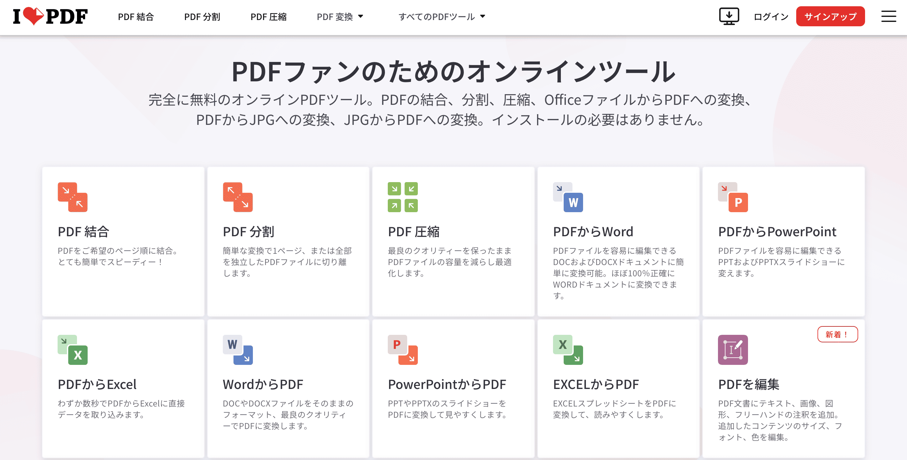
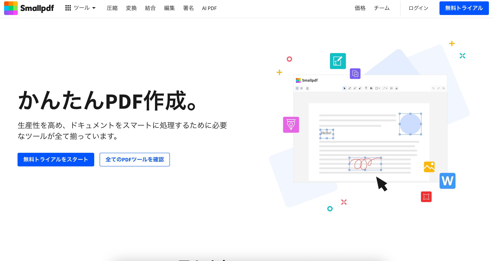

【2024年最新版】安全性で比較!PDFを無料で編集するサービス4選（結合・抽出・圧縮・変換）
はじめに
「会議で使うために複数のPDFファイルを1つのPDFファイルに結合したい」
「プレゼンで使うためにPDFの一部のページを抜き出したい」
「クライアントへのメールにPDFを添付するためにファイルサイズを圧縮したい」
「エクセルに貼り付けるためにPDFを画像化したい」
パソコンを使って業務をしていると、PDFファイルを結合、抽出、圧縮、変換をしたいということがありますよね。 でも方法を検索するといろんなサービスが出てきてどの方法を使えばいいのかわからない。どの方法が安全なのかわからないという疑問を持つ方も多いでしょう。 特に、業務で使うファイルは情報流出のリスクがない方法で編集をしたいですよね。
この記事では特に安全性の観点から、4つの無料でPDF編集できるサービスを紹介し、それぞれの使い方も解説しています。
目次 ▼
PDFの編集でできること
まず、そもそもPDFの編集とは具体的にどのようなことができるのかを紹介していきます。
1. PDFの結合
複数のPDFファイルを1つのファイルにまとめる機能です。複数人で分担して作成した資料を1つの資料として完成させる場合や、 繁雑になった複数のファイルを1つのファイルにまとめる際に活用できます。
2. PDFの抽出（分割・ページの削除）
1つのPDFから指定したページを抜き出す機能です。PDFの分割やページの削除という名前で機能が用意されていることもあります。 ページ数が多いPDFファイルから不要なページを削除してファイルサイズを軽くしたり、必要なページだけを抜き出して利用したい際などに活用されます。
3. PDFの圧縮
PDFのファイルサイズを小さくしてメールで送りたい時などに活用されます。
各方法でどれくらいファイルサイズを小さくできるかが重要です。
またPDFの圧縮は、ファイル内の画像の圧縮や未使用のフォントやオブジェクトの削除、ファイル構造の最適化によってファイルサイズを小さくしています。
したがって、画質が劣化したり、後からテキスト編集をすることが難しくなったり、メタデータが削除されたりといったデメリットがあります。
4. PDFの変換
PDFを別のファイル形式に変換したい時、逆に別のファイル形式からPDFに変換したいときに用いられます。画像、Word、PowerPoint、Excelなどの形式への変換、 またはそれらからの変換をすることができます。
5. その他
その他にも、方向が正しく保存されていないPDFを回転させる機能や、不正利用されないように透かしを入れる機能、PDFにページ番号を入れる機能などがあります。
安全性重視!無料で使えるPDF編集サービス4選
ここからは上記の機能を持っているPDF編集サービスを、安全性という観点で4つ選出していきます。
Adobe Acrobat

ブラウザ上で使える、制限付きで無料のPDF編集サイトです。ソフトウェアの大手企業のAdobeが運営しており、安全性と機能性を求める方におすすめです。
無料で使うには編集回数に制限があり、アカウントを作成してログインすると、その制限が緩められます。ただし、無制限に編集をするには有料プランの契約が必要です。
| メリット | 大手企業のAdobeが運営するサービスのため、安心感を持って利用できる。また、機能も充実している。 |
| デメリット | ログインせずに無料で使う際は1回のみ編集とダウンロードが可能。ログインした場合でもプレミアム機能へのアクセスには有料プランの契約が必要。 サーバーへのアップロードと処理があるために完成に時間がかかる。 |
| 機能 | PDF結合、抽出、圧縮、画像変換、Word変換、Excel変換、PPT変換、透かしの追加、回転、ページ番号挿入、順序入れ替え、トリミング、OCR、署名、パスワード設定、編集 |
| 安全性 | 大手企業が運営するため、安心感を持って利用ができる。 |
ibizaPDF
 ibizaPDF
ibizaPDF
ブラウザ上で使える完全無料のPDF編集サイトです。一通りの機能が揃っており、処理が全てブラウザ上で完結し、サーバーにデータを送信することがないため、非常に安全に編集ができると言っていいでしょう。
| メリット | 完全無料。ブラウザ上で処理が完結するので、安全性が高く、重くないファイルであれば動作が軽快。画像はjpeg、png、bmpと幅広く対応。 |
| デメリット | 重いファイルを編集する際はパソコンのスペックによっては動作が不安定になることもある。 |
| 機能 | PDF結合、抽出、圧縮、画像からの変換、画像への変換、透かしの追加、回転、ページ番号挿入 |
| 安全性 | ブラウザ上で処理が完結し、サーバーに送信することがないので非常に安全。 また、欧州データ保護規制(GDPR)を遵守しているので安心して使用できる。 |
iLovePDF
ブラウザ上で使える機能豊富な基本無料のオンラインPDF編集ツールです。海外のサイトで、不自然な日本語に不安を感じるかもしれませんが、安心して利用できる老舗サイトの一つです。
| メリット | 機能が豊富で、昔からあるサイトのため安心感を持って使える。基本的な使い方であれば無料プランでも十分。 |
| デメリット | ファイルがオンライン上のサーバーに送信されるため、データ流出の不安が残る。サーバーへのアップロードと処理があるために完成に時間がかかる。 |
| 機能 | PDF結合、抽出、圧縮、画像変換、Word変換、Excel変換、PPT変換、透かしの追加、回転、ページ番号挿入、順序入れ替え、トリミング、OCR、署名、ロック解除、編集 |
| 安全性 | 欧州データ保護規制(GDPR)を遵守しているので、基本的に安心して使用できる。 |
Smallpdf.com
ブラウザ上で使える機能豊富な基本無料のオンラインPDF編集ツールです。これもまた海外のサイトで、不自然な日本語に不安を感じるかもしれませんが、海外機関の認証も取得しているので安心して利用できるサイトの一つです。
| メリット | 機能が豊富で、各種認証の取得やデータ保護規則を遵守しているため、安心感を持って利用できる。 |
| デメリット | ファイルがオンライン上のサーバーに送信されるため、データ流出の不安が残る。サーバーへのアップロードと処理があるために完成に時間がかかる。1日の処理できる数に制限がある。 |
| 機能 | PDF結合、抽出、圧縮、画像変換、Word変換、Excel変換、PPT変換、透かしの追加、回転、ページ番号挿入、順序入れ替え、トリミング、OCR、署名、ロック解除、編集 |
| 安全性 | ISO/IEC 27001の認証を取得をしており、EU一般データ保護規則（GDPR）およびeIDASに準拠しているので、基本的に安心して使用できる。 |
まとめ
今回は安全性を重視して4つのPDFサービスを紹介してきました。今回紹介したサービスは全て安全とされているサービスですが、世の中に絶対安全はありません。
特に、今回安全と紹介したサイトでも、サーバーにアップロードするタイプのサービスは、外部からの不正アクセスのリスクは否定できません。
サイトの安全性の理由を理解し、自分の用途に合ったサービスを利用していくことが重要です。
手軽さと安全性を両立したサービスなら、ibizaPDF
を使ってみてください。より複雑な編集をするつもりでファイル数が少なければ、Adobe Acrobat。編集したいファイルが多くて高機能を求めていれば、
iLovePDFやSmallpdf.comを活用してみてください。